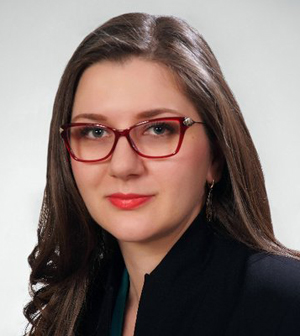
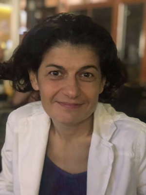
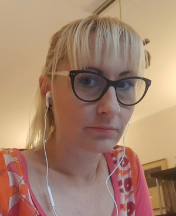
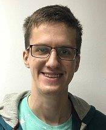

Nadica Miljković je vanredni profesor na Elektrotehničkom fakultetu Univerziteta u Beogradu (ETF). Glavna oblast njenog istraživanja je biomedicinsko inženjerstvo. Počela je da radi na ETF-u 2008. godine u zvanjima saradnik u nastavi i istraživač, a 2020. godine je birana u zvanje vanrednog profesora. Objavila je preko 60 radova, od čega 12 radova u časopisima sa impakt faktorom i dva otvorena elektronska udžbenika.
Bila je angažovana u sektoru razvoja i istraživanja u okviru dva projekta iz oblasti rehabilitacionog inženjerstva (bila je deo tima za razvoj dva nova biomedicinska uređaja). Njen klinički rad uključuje rad sa pacijentima sa povredama centralnog nervnog sistema i sa bolom u leđima. Otvarala je svoje podatke i programske kodove i koristila je već otvorene materijale u nastavi i istraživanjima, pretežno sa Zenodo repozotorijuma, GitHub-a i Physionet-a. Trenutno je urednica PSSOH konferencije (Primena slobodnog softvera i otvorenog hardvera), koja se organizuje na ETF-u, i članica TONuS tima za otvorenu nauku pri Ministarstvu prosvete, nauke i tehnološkog razvoja Republike Srbije.
Nadica Miljković je koordinator Serbia.RDM tima, a oblast njenog rada u okviru projekta uključuje definisanje institucionalnih politika, praktične aspekte otvaranja podataka u tehničko-tehnološkim i biomedicinskim naukama, softver za pseudoanonimizaciju podataka i računarsku ponovljivost (eng. computational reproducibility).
Obrad Vučkovac je bibliotekar u Institutu za nuklearne nauke „Vinča“. Pored poslova upravljanja bibliotekom, zadužen je za održavanje institucionalnog repozitorijuma Instituta. Interesuje ga upravljanje istraživačkim podacima, diseminacija informacija, semantički veb, otvoreni podaci i otvorena nauka. Pre dolaska u Institut „Vinča“ aktivno je radio na edukaciji i promovisanju informacione pismenosti kod studenata u Biblioteci Doma kulture „Studentski grad“. Član je TONuS tima za otvorenu nauku pri Ministarstvu prosvete, nauke i tehnološkog razvoja Republike Srbije.
Njegova uloga u projektu tiče se izrade i održavanja Serbia.RDM portala, definisanja procedura za deponovanje istraživačkih podataka u repozitorijume, i edukacije istraživača i bibliotekara.

Milica Ševkušić je bibliotekar u Institutu tehničkih nauka SANU. Težište njenih stručnih interesovanja jesu podrška naučnoistraživačkim aktivnostima kroz bibliotečke usluge, edukacija o akademskim servisima i alatima, informaciona pismenost, otvoreni pristup i otvorena nauka. Član je Tima za razvoj repozitorijuma Računarskog centra Univerziteta u Beogradu. Od novembra 2014. godine aktivna je kao nacionalni koordinator za otvoreni pristup pri EIFL-u. Članica je TONuS tima za otvorenu nauku pri Ministarstvu prosvete, nauke i tehnološkog razvoja Republike Srbije.U okviru ovog projekta baviće se definisanjem procedura za deponovanje istraživačkih podataka u repozitorijume i učestvovaće u edukaciji različitih grupa korisnika.

Ljiljana Lazarević je viša naučna saradnica u Institutu za psihologiju Filozofskog fakulteta u Univerziteta u Beogradu. Fokus naučno-istraživačkog rada su bazična struktura ličnosti i problemi merenja crta ličnosti. Do sada, objavila je više od 25 radova u WoS indeksiranim časopisima. Takođe, aktivna je u pokretu otvorene nauke gde je učestvovala u više kolaborativnih projekata kao što su Reproducibility Project: Psychology, Many Labs 2, Many Labs 5, Crowdsourcing Hypothesis Project. Dodatno, kao zamenik direktora angažovana je u međunarodnom projektu Collaborative Replications and Education Project, koji je namenjen obrazovanju studenata psihologije u oblasti metodologije istraživanja. Jedan je od autora seminalnog rada o insentivima za istraživače koji praktikuju dobre naučne prakse. Članica je TONuS tima za otvorenu nauku pri Ministarstvu prosvete, nauke i tehnološkog razvoja Republike Srbije.
Vladimir Otašević je master inženjer elektrotehnike i računarstva koji trenutno radi u Računarskom centru Univerziteta u Beogradu (RCUB). Oblasti njegov interesovanja su veštačka inteligencija i istraživanje podataka.
U RCUB-u se bavi realizacijom i održavanjem repozitorijuma naučnih publikacija. Radi na razvoju i poboljšanju servisa i alata namenjenih akademskoj zajednici. Kreirao je i dizajnirao različita interaktivna grafička rešenja za vizualizaciju podataka.
Vladimir Otašević je član Serbia.RDM tima, a njegovo angažovanje u timu podrazumeva realizacija Dataverse servisa i unapređivanje Serbia.RDM portala.